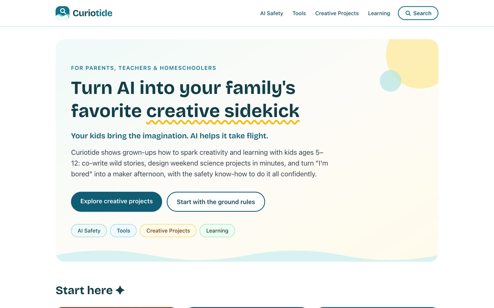

Side project
Curiotide
Turning AI into a family's favorite creative sidekick, shipped with an AI sidekick of my own.
Ideas and safe AI habits for parents, teachers, and homeschoolers of kids 5–12: co-written stories, weekend science projects, and "I'm bored" turned into a maker afternoon.
Built and maintained with Claude Code, from the first page to every update since. A real, public product where I put AI-assisted development to work outside my day job.
Explore curiotide.com ↗
Selected work
Built UI, API & E2E automation ecosystems
Building and modernizing UI, API, mobile, and end-to-end automation with Java, TypeScript, Cypress, Selenium, Playwright, and Appium.
Revamped E2E strategy around business risk
Moved from ad-hoc coverage to a data-driven, risk-based approach aligned to business-critical user journeys, with GraphQL and Cypress smoke coverage for release confidence.
Brought AI into everyday QE work
Built a self-service automation coverage and reporting platform using AI-assisted workflows, and co-organized AI-assisted coding workshops.
Launched CK Save & CK Spend
First QE on the Savings vertical; helped establish the quality engineering foundation for a new product area.
Reliable experiments & A/B tests
Partnered with product, analytics, and engineering on shift-left adoption and A/B testing programs to ensure reliable measurement and release confidence.
Set up the Bangalore QE team
Led onboarding and operational setup, enabling effective ramp-up and consistent execution across distributed time zones.
How I work
One QE for every ten developers.That was the average ratio at Credit Karma. At that scale quality can't depend on manual effort, so I get creative with everything available: process, automation, and AI.
Test what the business can't afford to break
Rank user journeys with engineering, product, and analytics using revenue, usage, and production-incident data, then automate those first.
Engineers own the release gate
Release-blocking gatekeeper tests belong to the engineering teams, and engineers are trained to fix them.
Automate the path to production
Suites run in CI from pull requests through test-environment deployments to production: hands-off test deploys and automatic production checks.
AI as a force multiplier
I run several AI coding agents in parallel and review the code they generate, so a small QE team covers more ground.
Experience
Senior II Software Test Engineer
Feb 2019 – Jul 2026Seven years across two business verticals: started on CK Money as the first QE for Savings, then moved to Insurance to push automation maturity further.
- Rebuilt end-to-end automation strategy, moving from ad-hoc coverage to a risk-based approach tied to business-critical user journeys.
- Updated automated smoke and integration coverage across GraphQL APIs and Cypress end-to-end flows to catch regressions earlier and cut manual validation.
- Worked with product, analytics, and engineering on shift-left practices and on validating experiments and A/B tests.
- Built an internal QE knowledge-sharing platform, co-organized AI-assisted coding workshops, and took part in senior engineering working groups.
Lead Software Test Automation Engineer
Feb 2010 – Feb 2019Grew from Automation QA Engineer to Testing Team Lead and Test Automation Lead, delivering QE for enterprise clients in e-commerce, retail, media, mobile, POS, and financial services.
- Led automation, test strategy, and team coordination for client programs including NBC Universal, The Source, and Mark's.
- Built UI, API, mobile, and end-to-end automation on Java with Selenium WebDriver, Cucumber, JBehave, and TestNG.
- Led distributed and offshore teams hands-on: hiring, onboarding, 1:1s, workload planning, and input on promotions.
Analyst / Software Testing Engineer
Mar 2008 – Feb 2010Business process modeling, UML documentation, and functional testing for an enterprise agriculture management system.
Education & certifications
Education
- M.S., Computer ScienceNational Technical University of Ukraine · 2010
- B.S., Computer ScienceNational Technical University of Ukraine · 2008
Certifications
- Agile Development Practices
- Interpersonal Communication
- Persuading Others